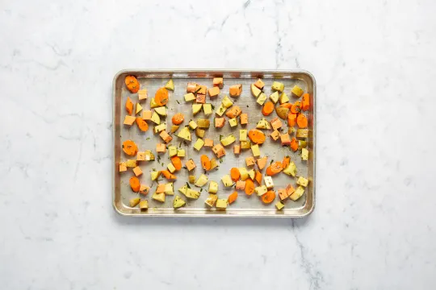

Garlic Rosmary Chicken

Description
Pan cooked chicken with oven rosted, rosemary seasoned, potatos, carrots and sweet potatos.
Ingredients
- Carrots
- Sweet Potatos
- Yukon Gold Potatos
- Rosemary
- Red Onion
- Chicken Breast
- Garlic
- Chicken Stock Concentrate
Steps
- Preheat oven to 450 degrees. Wash and dry all produce. Peel carrots, then cut into ¾-inch pieces on a diagonal. Medium dice sweet potatoes and
Yukon Gold potatoes into ½-inch cubes. Strip half the rosemary leaves off stems; finely chop until you have 1 ½ tsp..

- Toss together carrots, sweet potatoes, Yukon Gold potatoes, 1 tsp chopped rosemary, a large drizzle of oil, and a pinch of salt and pepper on a
baking sheet. Roast until slightly softened, about 15 minutes.
- While veggies roast, peel and thinly slice onion. Finely chop enough slices to give you ¼ cup chopped onion. Peel and finely chop garlic.
Place 1 TBSP flour on a plate; season generously with salt and pepper.
- Pat chicken breasts dry with paper towels. Evenly sprinkle with seasoned flour. Heat a large drizzle of oil in a large pan over medium-high heat.
Add seasoned chicken and cook until browned and cooked through, 3-4 minutes per side. Turn off heat. Remove from pan and set aside./li>
- In a small bowl, combine sliced onion, a drizzle of oil, and a pinch of salt and pepper. Once roasted for 15 minutes, remove veggies from oven.
Evely sprinkle with seasoned onion. Return to oven until browned and tender, about 12 minutes.
- In a small bowl, combine sliced onion, a drizzle of oil, and a pinch of salt and pepper. Once roasted for 15 minutes, remove veggies from oven.
Evely sprinkle with seasoned onion. Return to oven until browned and tender, about 12 minutes.